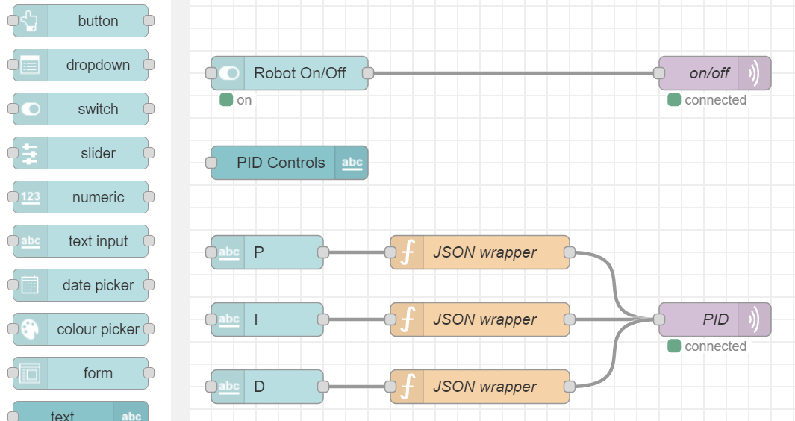

Telemetry and Database System
Telemetry and Database System Documentation
1 Purpose
This is a user summary document for our capstone telemetry and database server. It is intended to provide an overview of the different services that are in use for the data pipeline. The capstone project leverages the MING stack as shown in the overview diagram below.
I recommend using a central server to manage all of these services through a Zerotier Virtual Network. This will allow you to access the services from anywhere via the internet without exposing the server to the public.
1.1 Hardware Recommendation
The Lenovo M900 series of refurbished tiny PCs are recommended as an affordable option that meets the compute needs for a server. The SSD of the device was set to dual boot into Linux Ubuntu 22.04 for the purposes of running a server.
The Raspberry Pi 4B 8GB with a an external SSD was tested as a configuration but the requirements are at the limits of the processing power of the device.
2 Telemetry Services Overview
Telemetry and Control Command Communications

2.1 ZeroTier Virtual Network
Zerotier is a virtual network that allows for secure communication between devices over the internet. It is a VPN that allows for devices to be connected to a virtual network and communicate with each other as if they were on the same local network.
To setup a network you should first create a free account at https://my.zerotier.com/. Once you have an account you can create a network and add devices to it. The network ID is a 16 digit number that is used to identify the network.

2.1.1 Zerotier Client
The Zerotier client is a software that is installed on the devices that you want to connect to the network. Each device intended for the network including the server should have the client installed. Once it is installed, enter the network ID from the Zerotier website and then approve the device to the network. You may wish to set static IP addresses, especially for the server. This can all be done through the Zerotier website.
https://www.zerotier.com/download/
2.2 MQTT Overview
The robot an network is using the MQTT protocol to implement live telemetry. Topics are used on a subscriber publisher basis. All communication is routed through the Lenovo server that is acting as the broker. The Mosquitto MQTT server software is running on the Lenovo server which is the IP address used for routing messages. The default port for MQTT is 1883.
# Define the MQTT settings
broker_address = "172.22.1.1" #Lenovo's IP address
port = 1883
topic = "robot/telemetry"The MQTT explorer offers comprehensive tools to explore available topics and more: https://mqtt-explorer.com/ This can be a very useful tool for debugging and exploring the MQTT network to check if messages are being sent and received.
MQTT interfaces with Python, Node-Red, and Grafana to provide a comprehensive data pipeline. The MQTT broker is the central hub for all data that is being sent and received. The broker can be accessed by any device on the ZeroTier network that is subscribed to the topic.
2.2.1 MQTT Summary
MQTT is a lightweight messaging protocol that provides an efficient and cost-effective method of carrying out telemetry-based communication between devices. It’s especially popular in Internet of Things (IoT) applications due to its minimal bandwidth requirements and ease of implementation on hardware with limited processing capabilities.
2.2.1.1 Key Features of MQTT:
- Lightweight Protocol: Ideal for constrained devices and networks with limited bandwidth.
- Publish-Subscribe Model: Allows devices to publish messages to a topic and any client subscribed to that topic will receive the messages.
- Reliable Message Delivery: Offers various levels of Quality of Service (QoS) to guarantee message delivery.
- Minimal Overhead: Adds only a small overhead to each message, ensuring efficient use of network resources.
- Retained Messages: Supports retaining the last message sent on a topic, making it available immediately to new subscribers.
- Last Will and Testament: Provides a means for a client to notify other clients about an abnormal disconnection.
2.2.1.2 Application for our Robot
The Lenovo acts as a broker for all the data that is streaming out of the robot over a Wi-Fi connection to the internet. This offloads the databasing and broadcasting duty from the robot to the broker which can dedicate more resources to data management. The robot can publish data to a topic, which can be picked up by various subscribers such as the Lenovo’s Grafana server or other laptops, phones, etc that are connected to the broker and subscribed to the topic.
More Detailed System Diagram needed 
The broker can duplicate the published data to many devices in real-time. Another hidden stream for the data is through Node-Red to InfluxDB where the aggregate data can be store more permanently for access to testing records at a later date. Additionally, an MQTT bridge is connected to the Pi’s Grafana server which offers an advanced dashboard service for viewing live telemetry. Note that databased telemetry can also be viewed through Grafana which is connected to InfluDB, but it is a seperate data stream from MQTT and should have a seperate dashboard.
2.2.2 Publishing Messages
A sample script for publishing messages with Paho-MQTT client Documentation to the Lenovo server/broker while connected to Zero-Tier is provided, see the mqtt.py file. The script allows for publishing a controller value or a cpu_usage data point.
Prerequisites
MQTT Broker Setup: Ensure that the MQTT broker, in this case, the Lenovo server, is up and running.
Network Connection: Connect your device to the Zero-Tier network to ensure visibility and access to the broker.
Python Environment: Make sure Python is installed on your device along with necessary libraries: paho-mqtt, json
Broker Details: In the script, set the broker_address to the Lenovo server’s IP address and port to 1883 (default MQTT port).
A client is formed with a ClientID that should be descriptive, we then connect to the MQTT broker A dictionary of values can be converted to JSON format using JSON dump, method. The broker is designed to work with either raw values or JSON The JSON values can be a collection of data types with a Key and Value
The publish method publishes the data to the desired stream where other clients can subscribe to the topic.
2.2.3 Subscribing to messages:
- A Grafana server has been setup where some useful dashboards can be maintained. The IoT MQTT Panel for Android also offers some nice services including the ability to send messages.
- More details on subscribing through the Paho-MQTT client can be found at https://www.emqx.com/en/blog/how-to-use-mqtt-in-python ### QoS The protocol allows for fast transmission of messages and a similar PUB/SUB model as ROS topics. Telemetry read data can be sent using QoS level 0 which only attempts a single delivery of the data and does not wait for confirmation of receipt, this is perfectly acceptable for fast streaming data that is not mission critical.
For mission critical commands such as parameter adjustments and messages to the robot, a QoS level of 2 can be tied to the message which ensures that it is delivered to the robot exactly once. This avoids duplicate commands or lost commands through the network. It is a slower communication protocol but it is not an issue for lower bandwidth messages that are orginating from control devices to the robot.
2.3 Grafana Live Telemetry and Database Dashboards
Grafana is a powerful open-source platform for creating dashboards and visualizing time-series data. It is particularly well-suited for monitoring and analyzing real-time data. Grafana supports a wide range of data sources and can be used to display both live and historical data in a variety of formats, including graphs, tables, and gauges. Think of it as graph nirvana.
When it comes to viewing the telemetry data, a plugin can be installed to function as a bridge between the MQTT broker and the Grafana server. https://grafana.com/grafana/plugins/grafana-mqtt-datasource/
To setup Grafana, install the software on the Lenovo server first. The default port for Grafana is 3000. The program operates through a web browser and can be accessed by navigating to the IP address of the Lenovo server on port 3000.
Once you have logged in, you can add a data source by selecting MQTT from the list of available data sources if you have correctly installed the plugin. The panel will listen to all messages on a particular topic and display them in a graph or table format.
2.4 InfluxDB Databasing
The database can be accessed through Python API, through Grafana, or even a direct viewer. The database is also to be installed on the Lenovo server. The default port for InfluxDB is 8086. The database can be accessed through a web browser by navigating to the IP address of the Lenovo server on port 8086.
MQTT gives livestream data but if we want data storage and permanence between runs it needs to be databased. InfluxDB offers this service along with data manipulation services and a special query language. It also includes a data explorer through the web interface.
2.5 Node Red
Node Red is a flow-based open source development tool for visual programming developed by IBM. It is used for wiring together hardware devices, APIs, and online services in new and interesting ways. It provides a browser-based editor that makes it easy to wire together flows using the wide range of nodes in the palette that can be deployed to its runtime in a single-click.
For this application Node Red is used to bridge the MQTT broker to the InfluxDB database. This allows for the data to be stored in a database for later access. The data can be manipulated and stored in a more permanent format.
The Node Red server is installed on the Lenovo server. The default port for Node Red is 1880. The program operates through a web browser and can be accessed by navigating to the IP address of the Lenovo server on port 1880.
2.5.1 Node Red Dashboard

The Node Red dashboard is an additional feature that is accessed through the Node Red server. It allows for the creation of custom dashboards that can be used to provide a GUI for a robotics project. The GUI can be used to connect directly to incoming signals and also produce outgoing command signals that can be sent to the robot.
3 Conclusion
These service conbined together have proven to be a powerful tool for capstone development. In addition the Lenovo server functions as a valuable workstation for the team. The services are all open source and free to use. The services are also very well documented and have a large community of users that can help with any issues that may arise. Best of luck with your capstone project!